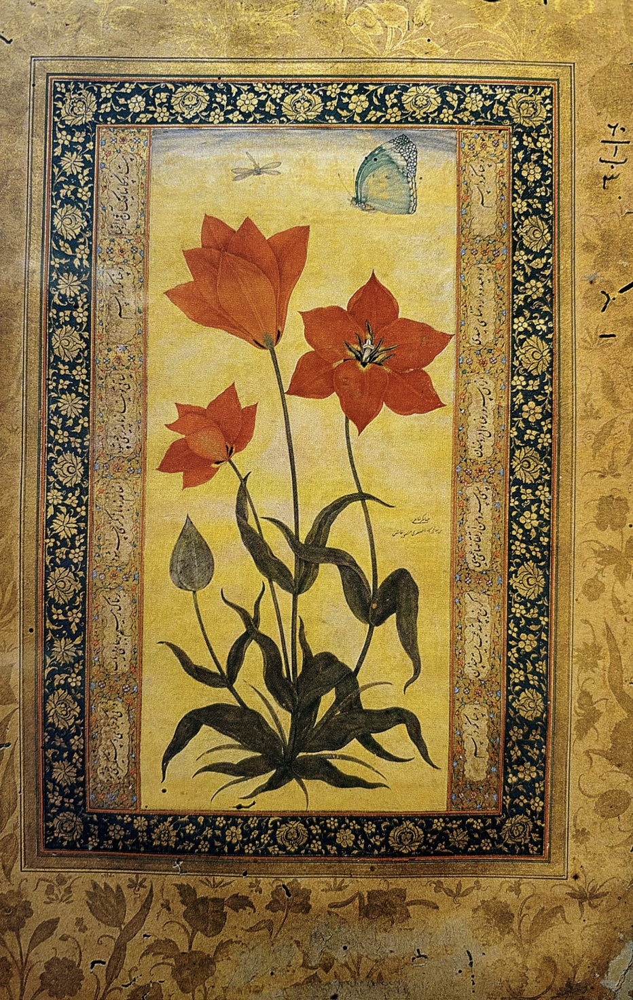

Kashmiri miniature paintings feel like poetry painted in silence. Every detail is delicate, controlled, and intentional—nothing is loud, yet everything is deeply expressive. The romance here is soft and refined. You often see gardens, lovers, royal life, or nature, all presented with elegance. It reflects the beauty of Kashmir itself—calm lakes, chinar trees, and flowing air. It’s the kind of romance that exists in glances, nature, and quiet moments, rather than dramatic expression
Kashmiri miniature painting developed under strong influence from Mughal and Persian art traditions. • Flourished during the Mughal period, especially under emperors like Jahangir • Kashmir became a center for art, culture, and craftsmanship • Artists blended Persian detailing with Indian themes These paintings were often used to: • Illustrate manuscripts • Decorate royal items • Inspire designs for Kashmiri crafts like shawls and carpets .
This art form is known for its extreme precision and elegance: • Fine Brushwork Very thin brushes used to create tiny, intricate details • Natural Colors Made from minerals, plants, and sometimes gold • Detailed Patterns Floral motifs, especially inspired by Kashmiri gardens • Balanced Composition Everything is symmetrical and harmonious • Layering & Detailing Multiple layers build depth while keeping clarity • • Influence of Persian Miniatures Clean lines, decorative borders, and refined figures
Kashmiri miniature art was traditionally practiced by court artists and skilled craftsmen. • Many artists worked under royal patronage during the Mughal era • The art was passed through apprenticeship systems • Today, it survives through artisans who continue traditional techniques Unlike folk art, this style is more refined, trained, and courtly.